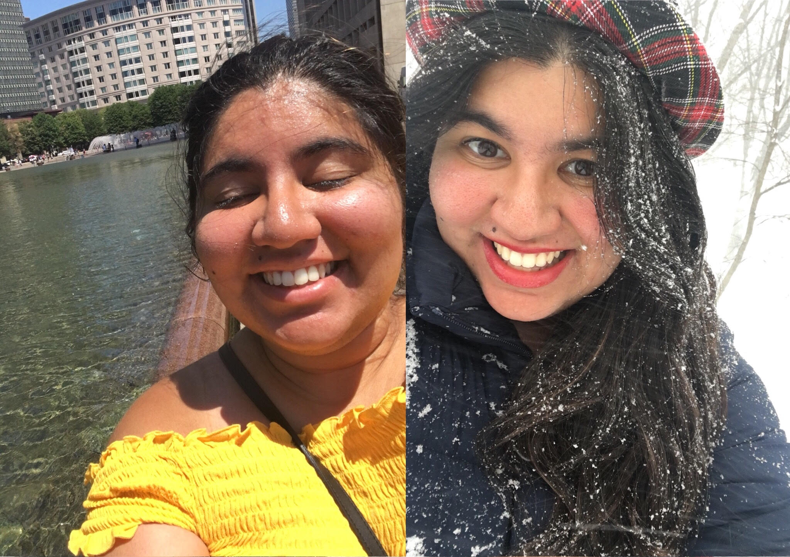

Navraj Narula
My name is Navie Narula and I am a graduate student at
Columbia University studying computer science and journalism. Prior to that, I completed an undergraduate degree in both computer science and secondary English education at
Boston University.
I am interested in text mining, language extraction, and pattern recognition as it may pertain to any type of unstructured data. I hope to use my computation skills for social good, especially when it comes to uncovering meaning in language. Last spring, I computationally examined language in
subreddit comments related to eating disorders. I also built a tool to detect emotion in text, which would then generate music based on that emotion label. In the past, I've analyzed trending topics on Twitter based on sentiment derived from a self-devised scoring algorithm.
As a result of taking a class on computational models for speech, I have become interested in audio input in addition to text. For my master's thesis at the journalism school, I studied features (i.e. pitch, intensity, etc.) related to
five emotion categories. I am currently in the works of adding modifications to my
classifier to better identify which sound utterances may pertain to which emotion.
I am currently looking for full-time jobs/internships and will graduate in May 2018. I am open to roles in language engineering, user/product research, or general software development. I want to help
companies create products that are not only more empathetic, but also reflect a lack of bias in terms of their user base. I believe that wording and language especially matters if a company wants its products to be used by diverse audiences.
Fun Fact: I love both the summer and winter equally!
↓↓↓
